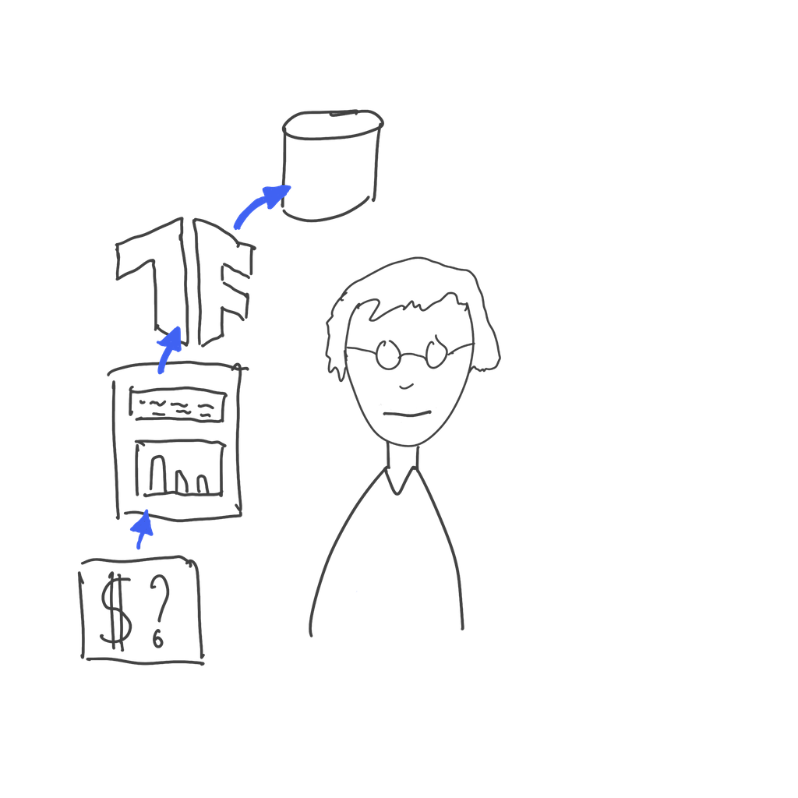
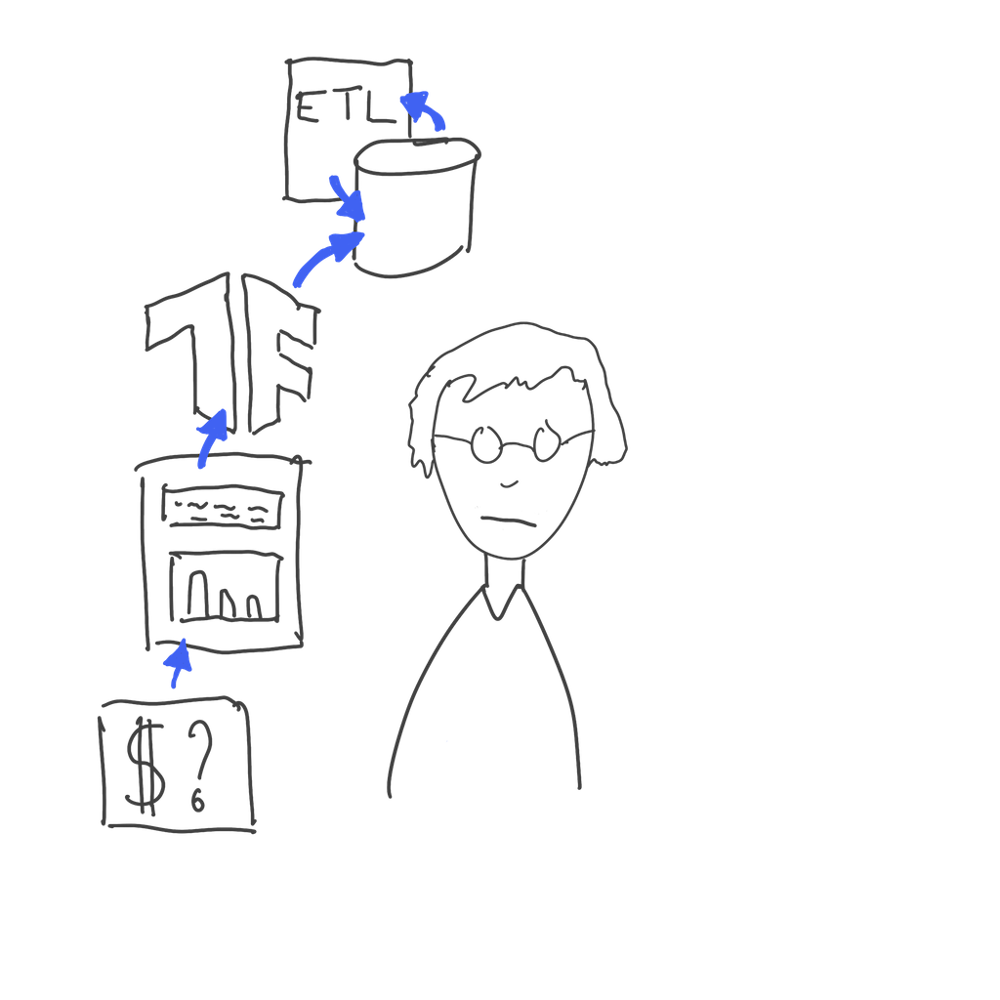

Python based workflow scheduler
Difference to a VM
Containers all run on top of the same host OS and take up substantially less resources!
Basic operations
-
Download an image
> docker pull debian -
Run a container
> docker run -it debian -
List running containers
> docker ps -
Remove containers
> docker rm 'id'
Basic operations
-
Environment variables / volumes and published ports
docker run -E ENV_NAME -V HOST:GUEST -p HOST:GUEST... -
Running named container in daemon mode
docker run --name NAME -d -
Attach to running containers
docker exec CONTAINER_ID COMMAND
Kubernetes
CRISP-DM revamped

Here is a data scientist.
CRISP-DM revamped

Data scientists solve important business problems.
CRISP-DM revamped

A good way to start solving a problem is to prototype a solution in a notebook.
CRISP-DM revamped

There are great libraries available for machine learning that make prototyping fun.
CRISP-DM revamped
After the first experiments, it is a good idea to start keeping track of models and data.
CRISP-DM revamped
It can take a lot of work to get the latest data and keep the models up to date reliably.
CRISP-DM revamped

Production workflows should run on servers, not on a laptop.
CRISP-DM revamped
These days, servers execute containers. Workflows need to be packaged for execution.
CRISP-DM revamped

Where should the results go? Sometimes they are deployed as containers too.
CRISP-DM revamped

Containerized models can be consumed by business applications.
CRISP-DM revamped
Stakeholders evaluate the results. They want more models and better models!